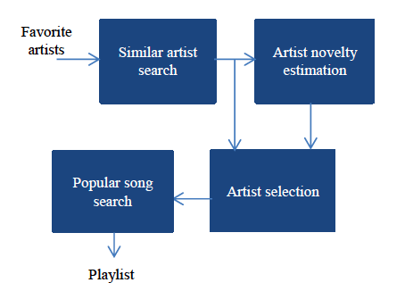

Music Recommendation Based on Artist Novelty and Similarity
Most music recommendation systems recommend only popular songs since they are most easily accepted. However, if a system can recommend a song which the listener might like but had never heard before, the song's newness, its unfamiliarity, might better appeal to many listeners' desire to "discover" new music and share it with their friends. Based on artists similarity and popularity, we built a system that can recommend new songs.
Publication:-
Ning Lin, Ping-Chia Tsai, and Homer H. Chen, "Music Recommendation Based on Artist Novelty and Similarity," 2014 IEEE International Workshop on Multimedia Signal Processing (MMSP).

-
Poster